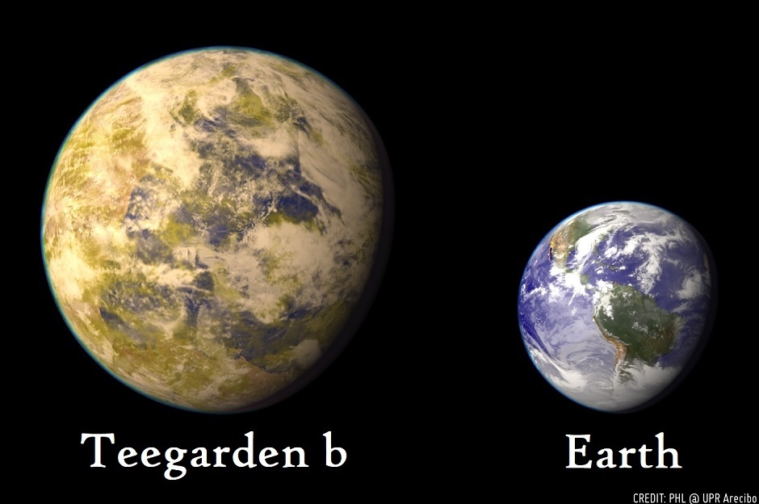
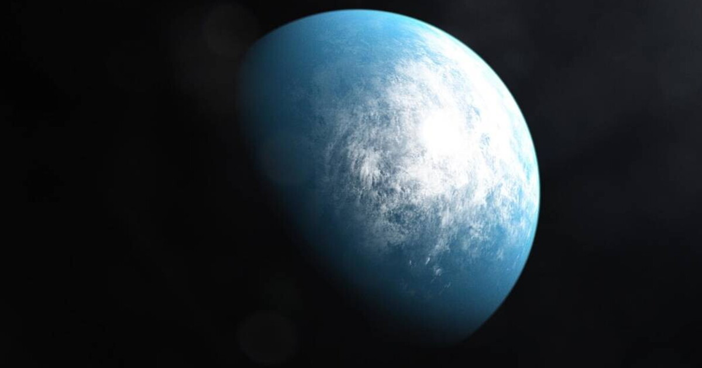
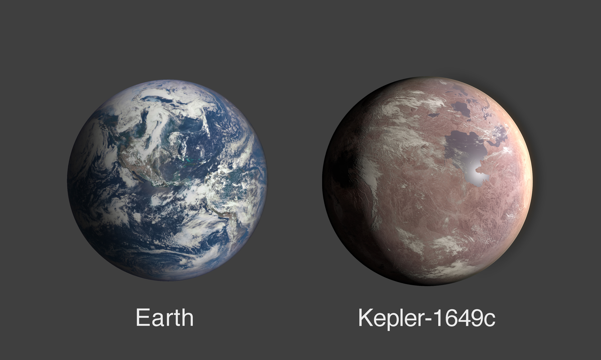
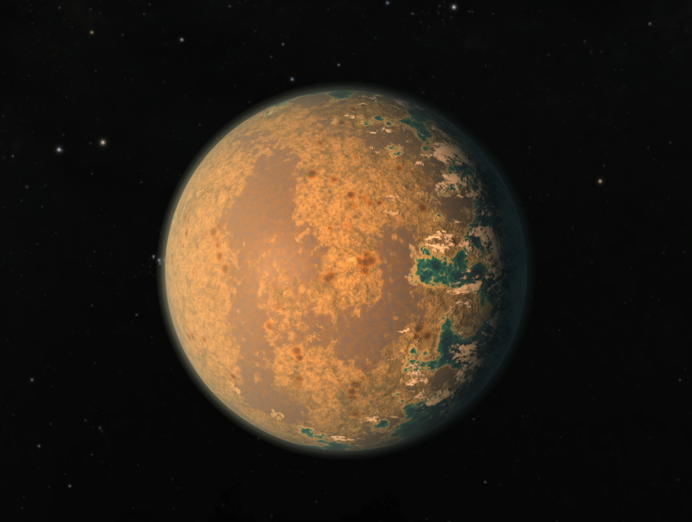
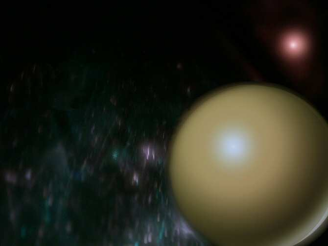

TEEGARDEN B
ESI: 0.95
Teegarden b è un esopianeta che orbita attorno la stella Teegarden, una nana rossa distante circa 12,5 anni luce dal sistema solare. Scoperto nel giugno del 2019, Teegarden b si colloca come l'esopianeta più simile alla Terra. Possiede un periodo orbitale di 4,91 giorni e una composizione probabilmente simile al nostro pianeta: è costituito dunque da rocce e un nucleo ferroso. Inoltre è presente acqua. Teegarden b si trova dentro la zona abitabile "conservativa" della sua stella; riceve, infatti, solo il 21% in più della radiazione che la Terra riceve dal Sole e la sua temperatura di equilibrio è di -9.15°C, poco più della temperatura di equilibrio della Terra. L'unico problema di questo pianeta, oltre i milioni di km che ci separano, rimane la rotazione sincrona rispetto la stella madre, ovvero il rivolgere ad essa sempre lo stesso emisfero. Inoltre, le nane rosse sono sovente soggette a violenti brillamenti che possono essere molto nocivi per lo sviluppo di forme di vita complesse. Tuttavia, la Stella di Teegarden, pare una nana rossa relativamente stabile e tranquilla.
Insomma, sembra essere una scommessa alquanto rischiosa.
TOI-700 d
ESI: 0.93
Al secondo posto abbiamo TOI-700 d. Esso è un pianeta extrasolare che orbita la stella TOI 700, anch'essa una nana rossa distante 101,5 anni luce dal sistema solare. Il pianeta è stato scoperto tramite il telescopio spaziale TESS nel gennaio 2020. Sono stati pubblicati tre differenti studi che rendono incerte le stime sulla massa, che varia dai 1,72 M⊕ a poco più di 2 volte la massa della Terra. I periodi orbitali, invece, sono noti con precisione: il pianeta ruota attorno alla stella in poco più di 37 giorni. Nonostante l'estrema vicinanza alla stella, potrebbero essere soddisfatte le condizioni per la presenza di acqua liquida sulla superficie, dato che la stella madre risulta molto meno luminosa del Sole. La stima della sua temperatura di equilibrio è di -4.15°C, molto simile alla nostra. Il pianeta, inoltre, riceve l'86% della radiazione che riceve la Terra dal Sole (la stessa che il nostro pianeta riceveva 1,7 miliardi di anni fa), ma anch'esso viene costretto alla rotazione sincrona.
Immagino già una guerra per conquistare l'emisfero di sole perenne.
KEPLER-1649 c
ESI: 0.92
La medaglia di bronzo va a Kepler-1649, ovvero un pianeta roccioso in orbita attorno alla nana rossa Kepler-1649. L'esopianeta è stato identificato come un pianeta roccioso. In termini di dimensioni, il suo raggio è 1,06 volte quello terrestre. Esso, inoltre, impiega 19,5 giorni terrestri per orbitare attorno alla sua stella e orbita all'interno della sua zona abitabile. Si sa molto poco del clima di Kepler-1649 c. L'esopianeta riceve dalla sua stella il 75% della radiazione che la Terra riceve dal Sole; si pensa, quindi, che la temperatura superficiale potrebbe essere molto simile a quella terrestre. Non è ancora chiaro quale sia la sua composizione atmosferica. Non è dunque provato che Kepler-1649 c possa contenere sulla sua superficie acqua allo stato liquido; inoltre il comportamento cangiante della sua stella non ci rassicura affatto!
Inoltre, il pianeta dista circa 300 anni luce dalla Terra: che fosse il caso di prendere spunto dal film "Passengers"?
TRAPPIST-1
ESI: 0.91
TRAPPIST-1 d è un pianeta extrasolare che orbita attorno alla stella TRAPPIST-1, una fredda nana rossa situata a circa 40 anni luce dalla Terra, in prossimità della costellazione dell'Aquario. Si stima che la sua temperatura di equilibrio planetaria, sia di -9 °C. Considerando che riceve un flusso radiante leggermente superiore di quello che riceve la Terra dal Sole, è possibile che durante la formazione possano essere evaporati parte degli oceani eventualmente presenti, ma, nel caso di TRAPPIST-1d, la perdita d'acqua potrebbe essere stata nettamente minore, e potrebbe aver conservato le condizioni per la presenza di acqua liquida sulla superficie. A sostegno di ciò, vi sono degli studi che hanno stimato una massa minore di circa il 30% di quella terrestre con un raggio del 77%, e quindi una densità minore di quella terrestre, che potrebbe indicare la presenza di grosse quantità di acqua allo stato liquido sotto forma di oceani. Lo stesso studio suggerisce che il pianeta abbia una quantità relativa di acqua 250 volte quella della Terra.
Un problema in meno!
LP 890-9 c
ESI: 0.89
LP 890-9 c è un pianeta extrasolare in orbita attorno alla stella LP 890-9, situata a una distanza di 105 anni luce. Scoperto nel 2022, il pianeta orbita nella zona abitabile della sua stella madre, ovvero una piccola e ultrafredda nana rossa di tipo spettrale, la seconda stella più fredda attorno alla quale sono stati scoperti pianeti. Ha il 12% della massa del Sole e una temperatura superficiale di circa 2596,85°C. Classificabile come super Terra, LP 890-9 c è leggermente più grande della Terra, ha un raggio di 1,37 r⊕, mentre la sua massa non è nota con precisione. Orbita in un periodo di 8,45 giorni. Anche questo pianeta è certamente in rotazione sincrona. La temperatura di equilibrio è di circa -18,15°, un po' più alta di quella terrestre. La breve distanza dalla stella potrebbe ridurre l'abitabilità planetaria. Abbiamo già detto che questo tipo di stelle potrebbero rivelarsi pericolose, in quanto capaci di spogliare il pianeta della sua atmosfera, anche se solitamente sono le nane rosse più giovani le più turbolente, mentre LP 890-9, con un'età stimata di 7 miliardi di anni (certamente non pochi!), non ha mostrato importanti variabilità durante le osservazioni. Il pianeta è un possibile futuro obiettivo del telescopio spaziale James Webb, che potrebbe rilevarne le caratteristiche atmosferiche.
Si spera in buone notizie.
